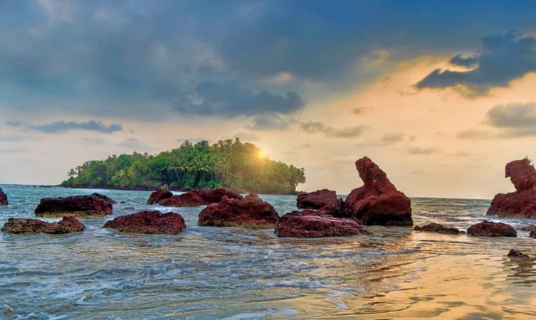

Kannur
Kannur is a coastal city in the south Indian state of Kerala. It was once an ancient
trading port. Enduring monuments such as 16th-century St. Angelo Fort, once occupied by European colonial
forces, show the city’s significant role in the spice trade. Housed in a former palace, the Arakkal Museum
highlights Kerala's one Muslim royal family. The palm-fringed sands of Payyambalam Beach run along
Kannur’s western shore.
Places to Visit in Kannur
- St. Angelo Fort.
- Muzhappilangad Beach.
- Palakkayam Thattu.
- Tellicherry Fort.
- Dharmadam Island.

Considered as one of the most historic sites in Kannur, the St. Angelo Fort was constructed by the first Portuguese viceroy of India. The fort is triangular in shape appears as a massive yet magnificent structure standing at the helm of the ruthless sea. The laterite walls made of stone lend it an even more imposing air and it is a must-visit destination for architecture students. The sea wall segregating the fort from the sea provides breathtaking views of the Mopilla Bay. Visit the fort for taking a relaxing walk in the complex and enjoy stunning views of the Arabian Sea.

Famous as Kerala’s only drive-in beach, the Muzhappilangad offers some of the most stunning views of the yellow and orange sun setting along the golden sandy beaches of Malabar coast. The 4 km stretch of land running along the ocean is perfect for taking a romantic, leisurely stroll with your partner or just drive on the beach and soak in the naked natural splendour around. Photography enthusiasts can take breathtaking shots of the ocean and food lovers can munch on authentic Malabar snacks sold on the beach.

Palakkayam Thattu is one of the alluring places to visit in Kannur near the Western Ghats because of the verdant greenery and dizzying height of about 3350 feet above the sea level. It also happens to be one of the most visited hill stations in the state of Kerala. Populated by dense forests and several hillocks, the quaint hamlet is a favoured destination for avid trekkers. Palakkayam Thattu is a natural paradise with astounding tranquillity and sereneness which is perfect for long weekend destinations overlooking the lavish foliage from the top of the mountains. If you are looking for an escape from the everyday hustle and bustle of your life, then this Keralan hill-station is the right place.
Situated on the Thalassery beach and perched on a rocky cliff, the Tellicherry Fort is one of the most
ancient places to visit in Kannur. Square in shape and surrounded by massive stone walls that have been
caved intricately, the fort is a tourist hotbed for cultural and architectural enthusiasts.
The fort also features a beautiful lighthouse that provides stunning views of the nearby landscape. Art
lovers will find attending the gallery inside the complex hosting several caves, monuments and ancient
paintings a brilliant way to spend an afternoon.

The untouched shores of the Dharmadam Island offer an escape from routine, worries, and tiredness like never before. Because of its segregation from the hustle and bustle of city life, the island has become a retreat centre for weary travellers. Surrounded by rivers on three sides and the Arabian sea on one side, the island features a brilliant view of the confluence of Anjarakandy and Thalassery Rivers. The canopy of tall coconut trees, the picturesque views of the sea, dense bushes peppered along the beach – all of this makes the island a sight to behold. Take a stroll along the sandy beach and dip your toes into the pristine waters. Experience solitude like never before.